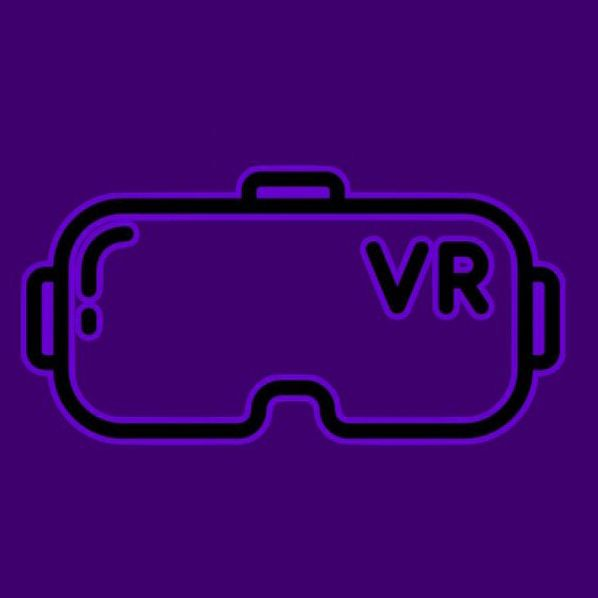

A VRverso foi fundada em 2023, por cinco estudantes que estavam no primeiro ano, em um projeto do Colegio Realengo. Com o objetivo de criar jogos e vivências que visam melhorar a experiência dos jogadores. Criamos jogos imersivos que conectam diversão e desafios simples, porém cativantes e cheios de história.
Em 2023 fizemos nosso primeiro site para a amostra cultural. Ele falava sobre a Realidade Virtual e sua criação, não deixando de lado é claro sua tecnologia altamente desenvolvida e melhorada com o tempo. Agora em 2024, apresentamos de primeira mão nossos dois primeiros jogos, Vaca atolada e Já pra forca, jogos que possuem uma ideia simples porém divertida e viciante.